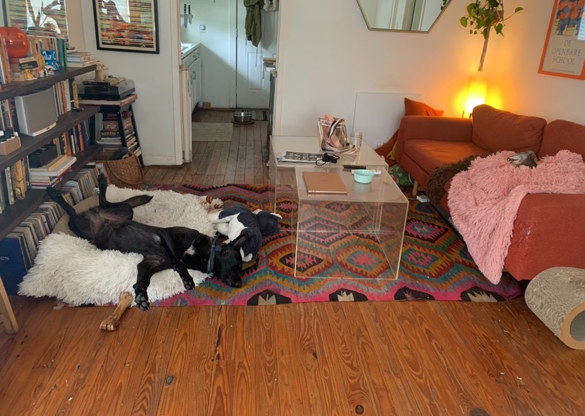

us
- I'm Jessamyn! I'm a software engineer at Modernize and Greg is a Music Researcher & bass player touring with Hamilton Leithauser and Kevin Morby.
- Our house is small but great!
- It's 101 years old and about 600 sq ft.
- Located in east downtown it's a great spot for dog walking, minutes from the trail along the water (fiesta park).
- We have a big backyard with a stocktank pool in the summer and firepit in the winter. We vibed it out string lights, chimes and bells.
contact
- jessamyn: (904)-347-1052
- greg: (573)-529-9864
- natalia (friend and neighbor on the corner): (512)-779-3110
- reed (nice neighbor on the right with stone fence): (504)-333-5932
amenities
Internet
- name:uniana
- password:bambino27
Projector, Bluetooth & Sonos
Projector
- roll down screen
- turn on power on black remote (firestick)
Bluetooth
- turn on bluetooth (Soundsync A3352) - little black box on bookshelf
- little black box on bookshelf
- press button until light is blinking blue
Sonos
- open app on iPad
- under bottom menu click "Browse"
- open app onclick on last option "Line-in"
- then click "Audio Component: Family Room
- banner at bottom of the screen should say "Family Room + Bathroom + Kitchen" and triangle ▶️ "play" should change to little square box ⏹️ "in play"
- click on that bottom banner
- it will switch to a screen that shows the volume on the bottom
- click on the volume bar and drag volume bar to the right, all the way up for "Family Room"
- the other two can be low or clicked off (mute) sonos beware: if you switch to music or anything else and have sonos all the way up it is CRAZY LOUD so make sure you slide down that dial for any / all of them down to very
low BEFORE changing the auto source to Spotify or any other sonos app
- bluetooth box should turn solid blue and screen should have a pop up with "Connected to Soundsync A3352"
- sound troubleshoot for projector > on white projector controller
- click "Picture"
- use down arrows to select "sound out"
- click "OK"
- scroll to right until "LG Sound Sync / Bluetooth"
- drop down to "DEVICE SELECTION"
- click "OK"
- when Sound menu appears click the down arrow until Paired Devies menu has pink check next to "Soundsync A3352"
- click "OK"
- little search dial can take a couple minutes
- should see pop up "Connected to SoundSync"
- recheck that SONOS is playing Audio Component
- if you can't get it to work you can always back up to white controller
- Picture
- sound out
- select "INTERNAL PROJECTOR SPEAKER"
- click EXIT then turn volume up and down on white controller
Firestick
- use black controller
- click the up arrow to get to home
- use wheel to scroll up down left right
- under the category "Recent Apps" you can find all the apps we use so click through and watch what you want!
- Netflix | HBO Max | Amazon Prime | Apple TV | Paramount | Starz | Disney and prob some more I forgot
- you can choose my profile / create a guest one / or log in with your stuff if you want - whatever works for you :)
Switch
- it's hooked into the projector under HDMI 2
- set up sound with bluetooth same as above under "Projector & Sonos"
- switch from firestick (HDMI1) to HDMI2 by clicking top right button that looks like a power plug üîå
- scroll down
- select
- click OK
- turn switch on with home button on controller or directly on the switch
- there's a soft case with a few games and a few games stored in the memory
- feel free to make a new profile and have fun!
Macbook

-
I left you my light silver MacBook Pro
- it uses the older charger that's plugged in on the bedstand
- open up and choose guest
- it's yours to use how you want!
Washer / Dryer
- feel free to use if you want / need to!
-
Bambino often has accidents in his soft crate when left in there if you have to leave the house
-
detergent on top of stacked washer/dryer
-
fill a capful in left compartment
-
set dial to cotton
- make sure temperature is set to cold or warm not hot!
- our water can get scalding hot so it can ruin clothes and stuff
Cooking & Eating & Drinking
- feel free to cook!
- also eat and drink whatever you want in the fridge and pantry, nothing's off limits
Stove
- the stove is gas so it has to light the pilot
- turn nob to the left with clicking sound until burner is lit
- then keep turning to the right HIGH --> LOW
- the front right burner sometimes won't light so have to use the electric lighter in the glass jar by the stove
Oven
- turn to the left - counterclockwise -
- takes about 15 to 30 seconds for pilot to light and it's... a loud "whoosh" sound that could take your eyebrows off if you're head is down there
- so PULL OUT THE SHEET PANS FIRST if that's what your using to cook
- they're in the broiler drawer down below
max
profile
- Max is a 3 year old Belgian Malinois we adopted from APA last year
- he's the sweetest, smartest most eager to love you kinda guy.
- He loves snuggling on the couch with you and following you around the house.
- He takes direction well and is learning boundries.
- He absolutely loves Dyna the black cat and is scared of Pina the Tortie, he growls at her sometimes when she gets close and he's sleeping.
- He will trample poor little Bambino when he's excited and doesn't really seem to have an awareness of where his body is, smacks his head and butt into the walls and tables daily :)
issues
medical
- He was found on the side of the road last Feb 2020 after being hit by a car
- he has metal plates fused in his front paws and major hip displasia which is why he's a little wobbily after laying down.
- He shouldn't be running too much, jumping or anything too rigorous as it might tear his metal plates (already tore his right one a few months ago but doesn't bother him at the moment) or put his hip sockets out of joint.
aggression
- He has a tendency to be protective and can be aggressive with people
- It's risky to have anyone over and if you have food deliveries make sure he's away from the door
- on walks avoid walking too close to people or dogs to be safe. We usually walk him on the right so when we pass others he's on the far side
seperation anxiety
- He also has separation anxiety and does not like being left alone, lots of barking and howling which upsets Bambino too and he will soil his bed and step in it :(
- the crate training we've been doing has been helping a bit but, it's gonna take some time.
- Refer to the sections on training and leaving
training
- So we did training with APA which was a helpful start but over the past year he has gotten more protective and aggressive with people.
- He growls at people waking up to the house, delivery people or mailman, or even people parking close.
- right after nipping at a person walking behind him at a coffee shop.. we knew we needed professional intervention!
- She made sure we understood that we need to set boundries, claim stuff like the door and front window, don't let him come up to us for affection or follow us around.
- We had to be the leaders and initiate affection and invite him into our space.
- We use the corrective low toned growl sound: "BAHHHH" sometimes with a clap or water squirt if needed, then followed with a higher toned: "good boy!" and optional treats
- the undesired behavior: growling/barking/coming up for affection/violating the boundry of stay or walking ahead of us on leash.
- If he ever growls or barks at you - this "BAHHHH" with optional clap then "Good Boy" with optional treats is the correction we were told would work
- also first greeting should be arms and hands up by the chest and no eye contact while he sniffs, when he finally ignores he gets a pet/tread/good boy I'll leave all the printed materials... we certainly don't expect you to continue the training, you can spoil him and just have fun! But we want you to feel safe, secure and confident with our power breed!
food instructions
Get ready for this proprietary blend! Max gets fed twice a day in the morning and evening - usually around 3 or 4ish depending on when Bambino starts whining lol
Here's the breakdown for each feeding:
- Using the half cup scoop in the dry food bin, give him 2 scoops dry (1 cup) in his big ceramic dog bowl.
- in the fridge all the wet stuff is pre-portioned out for each day so add in half of that in the am / other half in the pm
- add in some water and mix it all in, if the raw food is too frozen he might throw it up so make sure it's a nice soupy blend!
- since the shelf life for raw is only 5 days, pull out the pre-portioned from the freezer into the fridge on saturday for sun/mon
- Make him "Go to bed" in his crate while you're getting it all ready, he lays down and doesn't move. Then put it in front of him, wait a few seconds and say "Okay!" he will eat it laying down in his crate or even put it a few feet in front of the crate so he can stand up and eat it.
- Fill his water bowl everyday, he drinks about half a gallon a day!
pottytime
- Max needs to potty about 3 times a day: after breakfast / in the afternoon / and after dinner / sometimes we do a quick pee check before bed or leaving for a couple hours
- after breakfast/dinner he goes out back with Bambino, make sure you stay out there with him or he won't go, I like to sit at the table or on the porch and say in high tone to both "Go Potty" and snap my fingers a few times
- Max will ask for affection so either bahh him until he goes sniffing to relief himself or give him pets then ignore him
- he will pace on the side of the house or back and then poop
exercise
- feel free to take him on a walk with the barkbuster leash and collar!
- if he pulls ahead or tries to control the walk, he is very responsive to a corrective pull back on the leash and it makes a little metal zip sound when he
- he likes to chew on his bones and squeak his toys but, can't really play with him that much in our tiny house lol
- feel free to give him one of the raw bones in the freezer a day, especially in his cage if you have to leave
bedtime
- he's so good! just take him out back for a pee then "Go to your bed!"
- he'll run into his crate, give him a treat and a "Good boy!" with treats
- close the fold of the blanket down to help him settle
leaving
- he has seperation anxiety and hates when he's left alone :(
- if you do have to leave, especially for longer than a couple hours, give him 1 or 1 1/2 of his anti-anxiety meds about 2 hours before hand
- it takes a while for those meds to kick in and it lasts for about 6 - 8 hours
- While you're getting ready to leave, distract him by giving him a raw bone from the freezer and/or peanut butter frozen in his kong
- tell him "Go to your bed" throw in the and close crate with blanket covering front
- we've been trying to sit on the front porch for 15 - 30 minutes after he thinks we've left
- if he starts to bark we give a loud "BAHH" and clap from the porch then a "Good boy"
- again, you don't have to do this training, it may help with his anxiety level while your gone and overall stress level while he's in your care which can make your life easier! :)
bambino
profile
issues
medical
seperation anxiety
training
food instructions
Same proprietary blend! Max gets fed twice a day in the morning and evening (usually around 3 or 4ish depending on when Bambino starts whining lol)
- Using the half cup scoop in the dry food bin, give him 2 scoops (1 cup) of dry in the big ceramic bowl.
- in the freezer is frozen rectangle boards that are actually 100% raw food, he gets half of one, thawed, either the day before in the fridge or at room temp for about 20 minutes
- lastly he gets a food topper, the small blue box in the fridge or new box on top of the dry food bin. About a large spoonful dollop
- add in some water and mix it all in, if the raw food is too frozen he might throw it up so make sure it's a nice soupy blend!
Here's the breakdown for each feeding:
Make him "Go to bed" in his crate while you're getting it all ready, he lays down and doesn't move. Then put it in front of him, wait a few seconds and say "Okay!" he will eat it laying down in his crate or even put it a few feet in front of the crate so he can stand up and eat it.
Fill his water bowl everyday, he drinks about half a gallon a day!
pottytime
exercise
bedtime
leaving
max
profile
Max is a 3 year old Belgian Malinois we adopted from APA last year, he's the sweetest, smartest most eager to love you kinda guy. He loves snuggling on the couch with you and following you around the house. He takes direction well and is learning boundries. He absolutely loves Dyna the black cat and is scared of Pina the Tortie, he growls at her sometimes when she gets close and he's sleeping. He will trample poor little Bambino when he's excited and doesn't really seem to have an awareness of where his body is, smacks his head and butt into the walls and tables daily :)
issues
medical
He was found on the side of the road last Feb 2020 after being hit by a car, he has metal plates fused in his front paws and major hip displasia which is why he's a little wobbily after laying down. He shouldn't be running too much, jumping or anything too rigorous as it might tear his metal plates (already tore his right one a few months ago but doesn't bother him at the moment) or put his hip sockets out of joint.
aggression
He has a tendency to be protective and can be aggressive with people, a couple close calls and one incident where he bit my sister in the middle of the night, I think he was startled but the bite did break skin and shook her up. It's risky to have anyone over and if you have food deliveries make sure he's away from the door, on walks avoid walking too close to people or dogs to be safe.
seperation anxiety
He also has separation anxiety and does not like being left alone, the crate training we've been doing has been helping a bit but, it's gonna take some time. Refer to the sections on training and leaving
training
So we did training with APA which was a helpful start but over the past year he has gotten more protective and aggressive with people. He growls at people waking up to the house, delivery people or mailman, or even people parking close. After the bite incident with my sister which, was right after nipping at a person walking behind him at a coffee shop and a runner going by our house when I foolishly had him out front off leash... we knew we needed professional intervention! She made sure we understood that we need to set boundries, claim stuff like the door and front window, don't let him come up to us for affection or follow us around. We had to be the leaders and initiate affection and invite him into our space. We use the corrective low toned growl sound: "BAHHHH" sometimes with a clap or water squirt if needed, then followed with a higher toned: "good boy!" usually 1 to 2 seconds after if he stops the undesired behavior: growling/barking/coming up for affection/violating the boundry of stay or walking ahead of us on leash. If he ever growls or barks at you - this is the correction we were told would work, also first greeting should be arms and hands up by the chest and no eye contact while he sniffs, when he finally ignores he gets a pet/tread/good boy - I'll leave all the printed materials... we certainly don't expect you to continue the training, you can spoil him and just have fun! But we want you to feel safe, secure and confident with our power breed!
food instructions
Get ready for this proprietary blend! Max gets fed twice a day in the morning and evening (usually around 3 or 4ish depending on when Bambino starts whining lol)
- Using the half cup scoop in the dry food bin, give him 2 scoops (1 cup) of dry in the big ceramic bowl.
- in the freezer is frozen rectangle boards that are actually 100% raw food, he gets half of one, thawed, either the day before in the fridge or at room temp for about 20 minutes
- lastly he gets a food topper, the small blue box in the fridge or new box on top of the dry food bin. About a large spoonful dollop
- add in some water and mix it all in, if the raw food is too frozen he might throw it up so make sure it's a nice soupy blend!
Here's the breakdown for each feeding:
Make him "Go to bed" in his crate while you're getting it all ready, he lays down and doesn't move. Then put it in front of him, wait a few seconds and say "Okay!" he will eat it laying down in his crate or even put it a few feet in front of the crate so he can stand up and eat it.
Fill his water bowl everyday, he drinks about half a gallon a day!
pottytime
exercise
bedtime
leaving
max
profile
Max is a 3 year old Belgian Malinois we adopted from APA last year, he's the sweetest, smartest most eager to love you kinda guy. He loves snuggling on the couch with you and following you around the house. He takes direction well and is learning boundries. He absolutely loves Dyna the black cat and is scared of Pina the Tortie, he growls at her sometimes when she gets close and he's sleeping. He will trample poor little Bambino when he's excited and doesn't really seem to have an awareness of where his body is, smacks his head and butt into the walls and tables daily :)
issues
medical
He was found on the side of the road last Feb 2020 after being hit by a car, he has metal plates fused in his front paws and major hip displasia which is why he's a little wobbily after laying down. He shouldn't be running too much, jumping or anything too rigorous as it might tear his metal plates (already tore his right one a few months ago but doesn't bother him at the moment) or put his hip sockets out of joint.
aggression
He has a tendency to be protective and can be aggressive with people, a couple close calls and one incident where he bit my sister in the middle of the night, I think he was startled but the bite did break skin and shook her up. It's risky to have anyone over and if you have food deliveries make sure he's away from the door, on walks avoid walking too close to people or dogs to be safe.
seperation anxiety
He also has separation anxiety and does not like being left alone, the crate training we've been doing has been helping a bit but, it's gonna take some time. Refer to the sections on training and leaving
training
So we did training with APA which was a helpful start but over the past year he has gotten more protective and aggressive with people. He growls at people waking up to the house, delivery people or mailman, or even people parking close. After the bite incident with my sister which, was right after nipping at a person walking behind him at a coffee shop and a runner going by our house when I foolishly had him out front off leash... we knew we needed professional intervention! She made sure we understood that we need to set boundries, claim stuff like the door and front window, don't let him come up to us for affection or follow us around. We had to be the leaders and initiate affection and invite him into our space. We use the corrective low toned growl sound: "BAHHHH" sometimes with a clap or water squirt if needed, then followed with a higher toned: "good boy!" usually 1 to 2 seconds after if he stops the undesired behavior: growling/barking/coming up for affection/violating the boundry of stay or walking ahead of us on leash. If he ever growls or barks at you - this is the correction we were told would work, also first greeting should be arms and hands up by the chest and no eye contact while he sniffs, when he finally ignores he gets a pet/tread/good boy - I'll leave all the printed materials... we certainly don't expect you to continue the training, you can spoil him and just have fun! But we want you to feel safe, secure and confident with our power breed!
food instructions
Get ready for this proprietary blend! Max gets fed twice a day in the morning and evening (usually around 3 or 4ish depending on when Bambino starts whining lol)
- Using the half cup scoop in the dry food bin, give him 2 scoops (1 cup) of dry in the big ceramic bowl.
- in the freezer is frozen rectangle boards that are actually 100% raw food, he gets half of one, thawed, either the day before in the fridge or at room temp for about 20 minutes
- lastly he gets a food topper, the small blue box in the fridge or new box on top of the dry food bin. About a large spoonful dollop
- add in some water and mix it all in, if the raw food is too frozen he might throw it up so make sure it's a nice soupy blend!
Here's the breakdown for each feeding:
Make him "Go to bed" in his crate while you're getting it all ready, he lays down and doesn't move. Then put it in front of him, wait a few seconds and say "Okay!" he will eat it laying down in his crate or even put it a few feet in front of the crate so he can stand up and eat it.
Fill his water bowl everyday, he drinks about half a gallon a day!